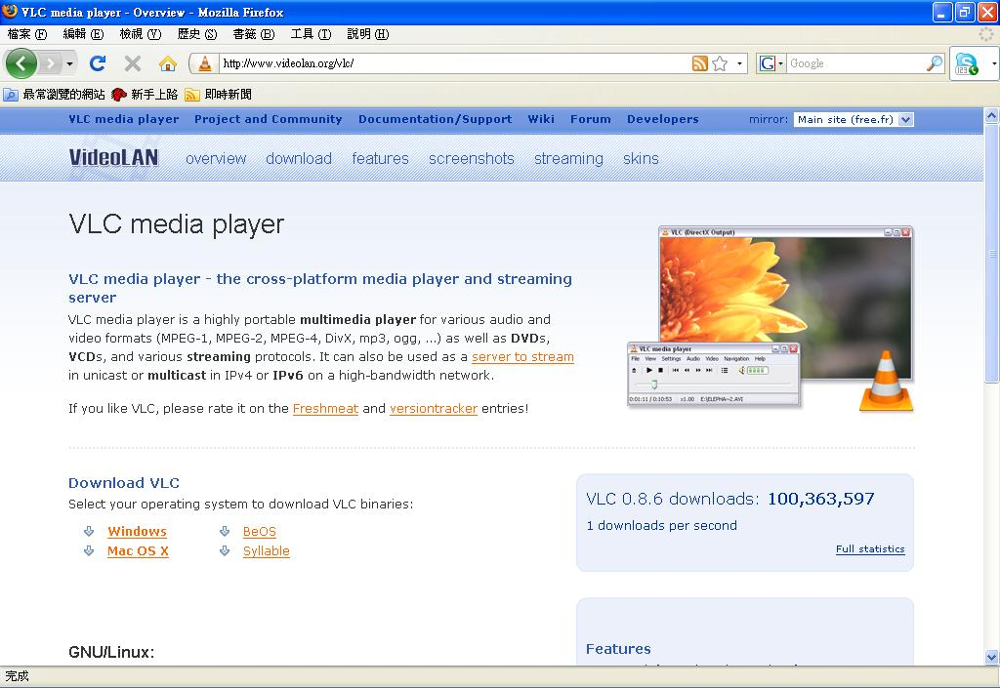
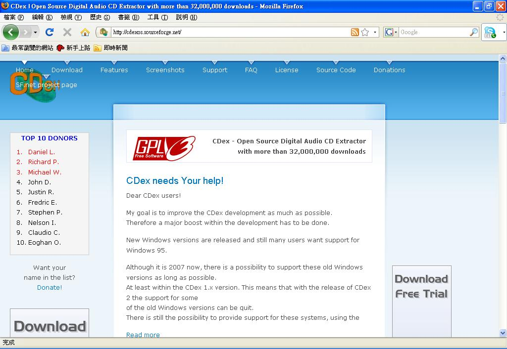
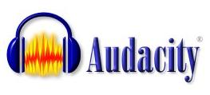

影音應用

VLC
● 軟體簡介
VLC（VedioLAN Client）是一款影音播放軟體，此軟體開發專案是由法國學生所發起的，可在許多作業平台上使用的多媒體撥放器，支援數種聲音及影像的格式（MPEG-1、MPEG-2、MPEG-4、DivX、mp3、ogg……）對於DVDs、VCDs、MPEG 與 DivX 檔案及一些影音串流的通訊協定都有良好的支援。
● 相關資訊
• 支援平台：Windows、Linux、Solaris、Mac OSX、FreeBSD
• 授權方式：GPL
• 官方網站：https://www.videolan.org/vlc/
CDex
● 軟體簡介
CDex 可以將音樂 CD 中的音軌轉錄成 wav 或者 mp3 格式的檔案，也能連上 Internet 讀取 CDDB。並且內建錄製 mp3 的編碼器，可以直接將 CD 音軌轉為 mp3 格式，也可以將 wav 檔轉成 mp3 格式。
● 相關資訊
• 支援平台：Windows
• 授權方式：GPL
• 官方網站：https://cdexos.sourceforge.net/
Audacity
● 軟體簡介
Audacity 可以讓你輕易地將 WAV、AIFF 以及 MP3 等不同格式的檔案匯入並加以編輯，再搭配上剪輯、複製、混音等功能，便可修剪出令人滿意的基本而專業的編輯特效。 Audacity 可允許使用者將音樂檔案以 WAV、MP3、OGG 等三種不同格式加以輸出，若這樣的功能仍無法滿足你的需求，還可自網路上下載專為 Audacity 所設的外掛程式模組。
● 相關資訊
• 支援平台：Windows、Linux、MAC OSX
• 授權方式：GPL
• 官方網站：https://audacity.sourceforge.net/about/?lang=zh-TW